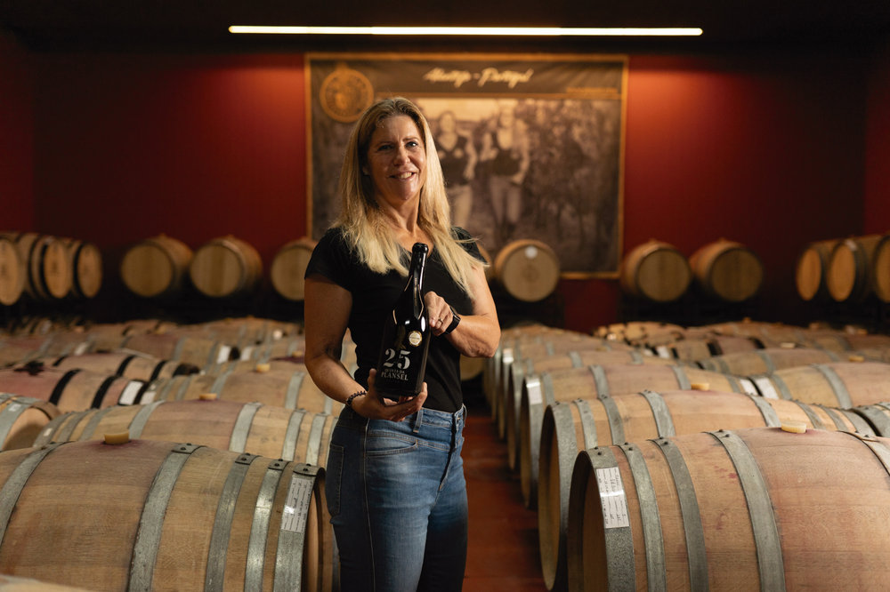
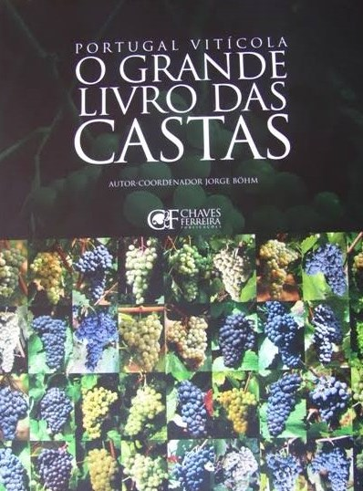

Klonselektion
Aus alten Weinbergen werden die gesündesten, ausdrucksstärksten Stöcke ausgewählt und vermehrt.
Familie Böhm
Die Stammtafel der Familie Böhm führt zurück in die Pfalz. In ihrer Mitte liegt Wachenheim an der Weinstraße, gemalt mit der Jahreszahl 1579, umgeben von den Wappen der Familie und ihren Vorfahren.
Die Tafel gehört zur „Chronik der Familie Friedrich und Emilie Böhm mit Abkommenschaft“, die Jorge Böhm 2013 für die Familie herausgegeben hat.
Chronik der Familie lesen Comendador Hans Jörg Böhm Dorina Lindemann


Gründer der Plansel Group
Rebenforscher, Weinhändler und Gründer von Viveiros Plansel. Seine Klonselektion prägt bis heute einen großen Teil der Weinberge Portugals.
„Portugal braucht seine eigene Forschung, damit es nicht von Sorten abhängig wird, die zu seinem Boden und Klima nicht passen.“
Lebenslauf
Comendador Jorge (Hans Jörg) Böhm, geboren 1938 in Neustadt an der Weinstraße, stammt aus einer deutschen Weinhändlerfamilie. 1961 strandete sein Segelschiff bei Cascais, und er verliebte sich in Portugal. Schon 1969 war das Familienunternehmen unter seiner Führung der größte Importeur portugiesischer Weine in Deutschland.
Nach einem Studium der Rebenzüchtung in Geisenheim gründete er 1981 Viveiros Plansel und begann die erste systematische Klonselektion portugiesischer Rebsorten, mit der Universidade de Évora und dem heutigen INIAV. Über 30 Forschungsprojekte später sind Plansel-Klone in Kalifornien, Neuseeland und Australien anerkannt, und ein großer Teil der Weinberge Portugals steht auf Plansel-Reben, vertrieben über Viveiros Plansel und Vinverus.
2006 ernannte ihn der Präsident der Portugiesischen Republik zum Comendador de Mérito Agrícola.
Geboren in Neustadt an der Weinstraße, in einer deutschen Weinhändlerfamilie.
Jorge Böhms Segelschiff strandet im Hafen von Cascais. Er bleibt, lernt das Land kennen und erkennt das Potenzial der Rebsorten im Alentejo.
Das Familienunternehmen wird unter seiner Führung der größte Importeur portugiesischer Weine in Deutschland.
Er kauft die ersten Flächen bei Montemor-o-Novo. Daraus entsteht die Rebschule Viveiros Plansel.
Gründung von Viveiros Plansel und Beginn der ersten systematischen Klonselektion portugiesischer Rebsorten.
Mit Paulo Laureano entsteht in der Versuchskellerei der Universität Évora der erste Wein. Sein Name: Plansel, kurz für „Plantas Seleccionadas“.
Comendador de Mérito Agrícola, ernannt vom Präsidenten der Republik
O Grande Livro das Castas erscheint, 2010 ausgezeichnet mit dem OIV Award.
Bester Weinbautechniker, Revista de Vinhos
Ehrenplakette der Universidade de Évora
Ehrenmedaille der Academia das Ciências de Lisboa
Neues Buch: Livro Branco das Castas Vitícolas.
Forschung
Aus alten Weinbergen werden die gesündesten, ausdrucksstärksten Stöcke ausgewählt und vermehrt.
Reben, die mit weniger Pflanzenschutz auskommen. Böhm hält das für die wichtigste Aufgabe der Branche.
Pflanzmaterial für heißere Sommer und weniger Wasser, getestet im Alentejo.
Fast vergessene portugiesische Rebsorten werden wiederentdeckt und im Wein erprobt.

Die nächste Generation
Dorina studierte Önologie an der Hochschule Geisenheim. 1997 gründete sie auf dem Land ihres Vaters in Montemor-o-Novo den Keller der Quinta da Plansel, 1999 entstand ihr erster Premiumwein unter eigenem Namen, mit 2.000 Flaschen. Heute führt sie die Quinta als CEO, zusammen mit ihren Töchtern Júlia und Luísa.
Sie unterrichtet an der Hochschule Geisenheim über portugiesische Rebsorten, Klima und Regionen und ist offizielle Verkosterin bei Mundus Vini. Ihre Weine wurden bei Mundus Vini, Decanter und der IWC ausgezeichnet.
Bücher




Wikipedia gibt es bisher nur auf Portugiesisch und Deutsch. Diese Seite fasst sein Leben in sieben Sprachen zusammen.
Kontakt
Für Fragen zu Rebsorten, Klonen, Forschung und seinen Büchern.